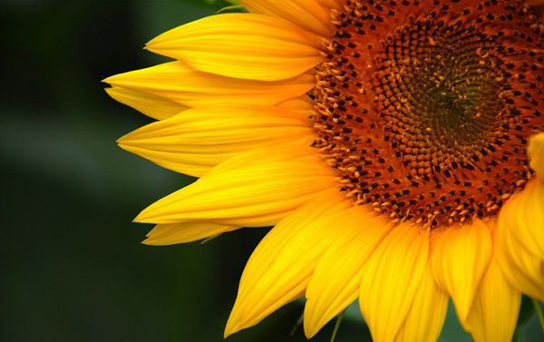

grow with love
 لكل منا هواية مختلفة هوايتي انا هي الزراعة و مشاهدة النباتات تنمو امامي كل يوم و مدى تاثير
عنايتي بصحتها ، و اهمالها ليوم واحد يؤثر عليها بشكل واضح سأعرض عليكم في هذا الموقع روتين
عنايتي بالنباتات و اختلاف كل نبات عن الاخر من حيث خصائصة و مميزاته والعناية التي يحتاجها
لكل منا هواية مختلفة هوايتي انا هي الزراعة و مشاهدة النباتات تنمو امامي كل يوم و مدى تاثير
عنايتي بصحتها ، و اهمالها ليوم واحد يؤثر عليها بشكل واضح سأعرض عليكم في هذا الموقع روتين
عنايتي بالنباتات و اختلاف كل نبات عن الاخر من حيث خصائصة و مميزاته والعناية التي يحتاجها

نباتي المفضل هو عباد الشمس لن اذكر السبب منعا للدراما في هذا الموقع ، لتفاصيل أكثر حول هذا النبات اضغط على الصورة
هنالك هواية اخرى وهي الرسم ولقد قمت بدمج الهوايتين و أصبحت أرسم شخصياتي الكرتونية المفضلة على الاصيص الخاص بالزراعة و
شخصيتي الكرتونية المفضلة هي غامبول اضغط على الصورة لمعرفة المزيد اذا كان لديك فضول عني :